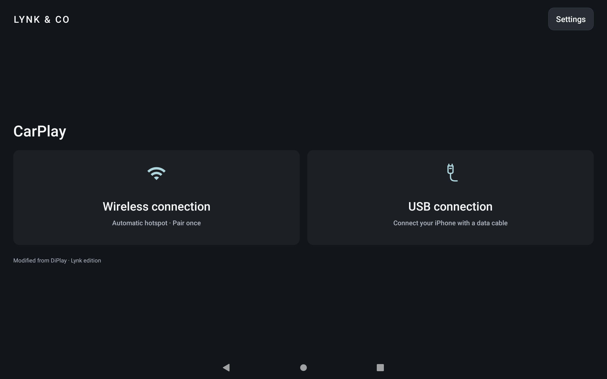

Your familiar CarPlay.
Now in your Lynk.
An open-source CarPlay receiver adapted for Lynk OS N 2.0 / Android 9 head units. Connect your iPhone for maps, music and calls on the car screen.
An independent community adaptation of DiPlay. Not an official Lynk or Apple product.

Downloads
APK not published yet
The website and source code are available. A complete APK is not publicly distributed yet. Downloads and release notes will appear here after publication.
Disclaimer and usage risks
This is an independent open-source community adaptation of DiPlay, not an official Lynk, Geely or Apple product. It is not certified, authorized or endorsed by these brands. Decide whether to install and use it only after understanding the following risks.
- Driving safety
- Install, pair, configure, test and troubleshoot only while safely parked. Do not operate the app or handle failures while driving. Always prioritize road conditions and the vehicle's original safety functions.
- Connection, video and audio
- Disconnections, stuttering, a blank screen, missing audio or switching failures may affect navigation, music and calls. If a failure occurs, park safely before exiting the app and returning to the vehicle's original functions. Do not rely on this project as your only navigation or emergency calling method.
- Compatibility and continued availability
- Validation is limited to the target vehicle; other cars, firmware and iOS versions are not guaranteed to work. System updates, USB or Bluetooth restrictions, third-party protocols or changes to experimental authentication may break functionality. Wireless currently does not work properly and is still being tested and repaired.
- Installation sources, data and vehicle policies
- A complete APK is not publicly distributed. Do not trust external sources claiming to provide this project's installer. Third-party apps can pose risks to devices and personal data. Do not disable system security or force-flash the head unit to install it. Back up important settings before installing or updating; uninstalling removes app-private data. Confirm installation restrictions and service policies with the manufacturer.
- Permissions and diagnostic privacy
- Grant microphone, Bluetooth and network permissions only as needed for the features you use. Diagnostic reports include device and connection information; automatic redaction cannot detect every sensitive detail. GitHub issues are public. Review and remove personal information, network identifiers and other sensitive data before sharing.
- Experimental authentication and third-party rights
- Experimental authentication material is not official certification issued by Apple for this project. Continued acceptance and suitability for general distribution remain unresolved. The public source excludes these authentication inputs; compiling it does not by itself provide full CarPlay connectivity. Code licenses do not grant rights to third-party trademarks, icons or authentication material. Follow the relevant licenses and requirements.
To the extent permitted by applicable law, the software is provided as is, without guarantees of compatibility, stability, fitness for a particular purpose or continued availability. Liability for data loss, device or functional failures and other losses from use or inability to use the software is governed by the applicable open-source licenses and local law. This notice does not exclude or limit liability that cannot lawfully be excluded or limited. Follow local laws and the vehicle manufacturer's requirements.
Install on the head unit. Connect your iPhone.
- Once available, download the Lynk edition APK and install it on the Android head unit, not your iPhone.
- Open Settings and run the environment check. Follow the prompts for USB and required permissions.
- Choose the USB connection and connect your iPhone to the head unit's USB-A port with a data-capable cable. Do not use the car's USB-C port: it is for charging only.
- Wireless connectivity is still being debugged, tested and repaired and currently does not work properly. Please use a wired connection for now.
Updates with the same package name and signing key can be installed over the existing app to preserve pairing and settings. Find update checks and the website in Settings → Support → App updates.
Full adaptation and installation guide ↗Adapted for the head unit
- Lynk-style interface with USB wired connectivity; the wireless entry remains available for further debugging.
- Android 9 USB configuration checks, connection cleanup and audio lifecycle adaptations.
- Read-only environment checks and one user-exported report for wired and wireless diagnostics.
- Automatic and manual public version checks. You choose when to download and install.
Compatibility and validation
Target: 2023 Lynk 03, OS N 2.0 / Android 9. The user confirmed working USB connectivity and acceptable smoothness with test17. Use the head unit's USB-A port for data; the car's USB-C port is for charging only. Wireless currently does not work properly and is still being debugged, tested and repaired. Other cars, firmware and iOS versions require separate testing.
Connection issue?
Export a diagnostic report in Settings and include the head unit, OS, app version and reproduction steps. Review and remove personal information before posting.
Open source, with thanks
Modified from DiPlay, retaining the original author and contributor credits, under AGPL-3.0. Upstream project and third-party licenses: DiPlay · Third-party notices